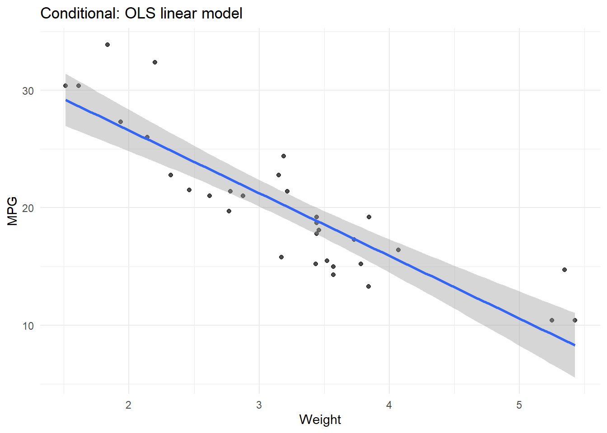

Statistics for Graphics — Deep‑Dive Study Notes
Author
K.J. Mhango
Published
September 6, 2025
1 Welcome to your Study Companion
This document is your detailed, plain‑English walkthrough of Chapter 7 — Statistics — from a design‑first, student‑friendly perspective. It covers every concept, method, and geometry, explains them step‑by‑step, and shows you how to reproduce each one in R using ggplot2. But this is more than a code walkthrough — it’s written to help you understand the logic behind the graphics, the assumptions being made, and how to critique or communicate what a visual is actually saying.
Think of this as a bridge between theory and practice, but also between expert graphics language and your own growing intuition.
📚 Goal: You should be able to look at any chart and say:
What method/statistic underlies this graphic?
What geometry and aesthetics were chosen to display it?
Why was this method appropriate — and what are its limitations?
Can I recreate it from raw data?
Could I explain it to a smart but non‑technical friend?
Code
set.seed(42)suppressPackageStartupMessages({library(ggplot2)library(dplyr)library(tidyr)library(MASS) # for kde2dlibrary(scales)})# Helper: Freedman–Diaconis binwidthfd_binwidth <-function(x) { iqr <-IQR(x, na.rm =TRUE) n <-sum(is.finite(x))if (iqr ==0|| n <=1) return(diff(range(x, na.rm =TRUE)))2* iqr / (n^(1/3))}# Helper: quick CI around a mean (normal approx)mean_se_df <-function(x) { m <-mean(x, na.rm =TRUE) se <-sd(x, na.rm =TRUE) /sqrt(sum(is.finite(x)))tibble(y = m, ymin = m -1.96*se, ymax = m +1.96*se)}
2 1 🧠What This Chapter Is Really About
Chapter 7 is titled “Statistics†but it’s not a stats textbook chapter. You won’t find derivations or proofs. Instead, this chapter teaches you to think about how graphics work underneath. Just like a car has an engine and a chassis, every chart you see has a statistical method (its engine) and a geometry (its visible shape).
For example:
A histogram uses the method binning and displays it with bars.
A regression line is the result of a smoothing method (e.g., linear regression or LOESS), drawn with a line.
A confidence interval is a region (e.g., mean ± SE), drawn with a ribbon or error bars.
This chapter helps you see those hidden engines — and choose or change them when designing your own graphics.
2.1 1.1 ✋ Why Not Just Use the Defaults?
The big mistake in data science is assuming that a chart is “just a visual†— a skin on the numbers. It’s not. The statistical method you choose changes the story. For example:
Choosing 5 bins vs 50 bins for a histogram can hide or reveal structure.
Fitting a smooth curve assumes there is something smooth to discover. Is there?
Showing mean ± standard deviation assumes your audience understands the difference between spread and uncertainty. Do they?
So this isn’t just about learning geom_smooth() or geom_bar(). It’s about learning to think like a graphic designerand a statistician — so you can build graphics that are fair, clear, and insightful.
3 2 🗺️ The Five Engine Types (Methods)
Let’s begin by understanding the five classes of statistical methods that drive charts:
Class
What it does
Example chart
Example method
bin
Slices space into equal (or adaptive) parts
Histograms
Binning
summary
Collapses data into a summary value
Bar charts, dotplots
Mean, median, mode
region
Shows spread or uncertainty areas
CI bands
SE, SD, 95% confidence
smooth
Fits a line/surface to reveal a pattern
Trend lines
Linear model, LOESS
link
Connects points to show relationships
Networks, MST, flows
Delaunay, MST, Hull
You’ll see these again and again. If a chart exists, it’s likely powered by one of these (or a combination).
Form vs function. A method transforms data; a geometry draws it. The same method can be drawn with different geometries (e.g., a CI as a ribbon or as error bars), and the same geometry can show different methods (a line can be a smoother, a boundary, or a path).
4 3 🔠How to Read This Guide
Each section follows the same rhythm:
Concept — What does this method do? Why use it?
Example — What real‑world data does it apply to?
Explanation — What just happened? Why did it work?
Common Misuses — What goes wrong and how to spot it.
Design Considerations — How to make it readable, honest, and beautiful.
In the final third we explore advanced link‑based visuals (convex hulls, MSTs) and the crucial distinction between conditional and joint modelling — a powerful way to think about what varies with what.
We end with a cheat‑sheet, practice tasks, and a pitfalls section.
5 4 📊 Group Summaries (Summary → Point or Interval)
Group summaries collapse many observations into a single representative value per group, then draw those values (and sometimes their uncertainty) so comparisons are easy.
5.1 4.1 🯠Means, medians, and why both matter
Means and medians are two of the most widely used summary statistics, and understanding their differences — especially when distributions are skewed — is essential to reading and making graphics responsibly.
The mean is the arithmetic average. It is sensitive to outliers and skew because it takes all values into account equally.
The median is the middle value when all observations are sorted. It is resistant to extreme values, making it more stable when data is skewed or contains outliers.
Real‑world analogy — income: 9 people earn £20–30k; 1 person earns £1m. The mean rockets upward and represents almost no one; the median stays around £25k — a fairer picture of the typical individual.
Exams analogy: If most students score high but a few very low, the mean gets pulled down while the median remains near where most students are.
Graphic practice: When distributions are symmetric, mean and median will be close. When skewed, show both.
Code
sl_summ <- iris %>%group_by(Species) %>%summarise(mean =mean(Sepal.Length), median =median(Sepal.Length), .groups="drop") %>%pivot_longer(-Species, names_to ="stat", values_to ="value")ggplot(sl_summ, aes(Species, value, colour = stat)) +geom_point(position =position_dodge(width = .3), size =3) +labs(title ="Mean vs Median (Sepal.Length)", y ="Value") +theme_minimal()
Reading the plot. If mean and median are far apart, suspect skew/outliers. If they align, distribution may be symmetric.
5.2 4.2 📠Error bars: mean ± SE vs SD (don’t confuse them)
When you plot error bars, be clear about the uncertainty you’re communicating.
Standard deviation (SD): spread of individual values.
Standard error (SE): precision of the mean.
95% CI: roughly mean ± 1.96 × SE, a plausible range for the true mean.
Small synthetic example.
Code
set.seed(123)small_df <-tibble(group =rep(c("A", "B", "C"), each =5),value =c(rnorm(5, 10, 2), rnorm(5, 12, 2), rnorm(5, 15, 2)))summary_df <- small_df %>%group_by(group) %>%summarise(mean =mean(value), sd =sd(value), se = sd/sqrt(n()),ci_lower = mean -1.96*se, ci_upper = mean +1.96*se,.groups ="drop")summary_df
sl_ci <- iris %>%group_by(Species) %>%summarise(mean =mean(Sepal.Length), se =sd(Sepal.Length)/sqrt(n()), .groups ="drop") %>%mutate(ymin = mean -1.96*se, ymax = mean +1.96*se)ggplot(sl_ci, aes(Species, mean)) +geom_point(size =3) +geom_errorbar(aes(ymin = ymin, ymax = ymax), width = .08) +labs(title ="Mean Sepal Length with 95% CI", y ="Sepal.Length (cm)") +theme_minimal()
Design tip. Label clearly: points = mean; bars = 95% CI. If showing SD for spread, say so and consider plotting raw data.
5.3 4.3 🔵 Bars versus dots for summaries
Bars imply filled area and can suggest (wrongly) that nothing exists below zero or between ticks. Dots with intervals are lighter and focus attention on estimates.
Reading. FD is robust to outliers (IQR); Scott leans on variance. Try both; report the choice.
7.2 6.2 Kernel density over histogram — what’s a kernel?
A kernel density estimate (KDE) is a smooth, continuous approximation of a distribution’s shape. A kernel is a small bump (often bell‑shaped) centred on each data point; summing the bumps yields a smooth curve. Bandwidth controls bump width: too small → jagged; too large → over‑smoothed.
Code
base_hist <-ggplot(faithful, aes(eruptions)) +geom_histogram(aes(y =after_stat(density)), binwidth =fd_binwidth(faithful$eruptions), fill ="grey85", colour ="white") +geom_density(adjust =1) +labs(title ="Histogram with kernel density overlay", subtitle ="adjust = 1 (default bandwidth)", y ="Density") +theme_minimal()base_hist
Code
# Bandwidth comparisonggplot(faithful, aes(eruptions)) +geom_density(adjust =0.5, colour ="red", fill ="red", alpha =0.2) +geom_density(adjust =2, colour ="blue", fill ="blue", alpha =0.2) +labs(title ="Bandwidth effect on KDE", subtitle ="Red = under‑smoothed (0.5); Blue = over‑smoothed (2)", x ="Eruption length (min)", y ="Density") +theme_minimal()
Design advice. Label bandwidth; use KDE to supplement histograms; with small n, prefer dot/strip plots.
When your scatterplot becomes an unreadable cloud of ink, it’s time to stop plotting every point and start thinking about density. Instead of rendering each dot, we can ask: where is the data concentrated? This is where density mapping becomes powerful.
There are two main ways to do this: you can divide the space into small rectangles (or hexagons) and count how many points fall into each — this is 2D binning. Or, you can imagine dropping a tiny bell-shaped curve (a kernel) on each point, then summing the curves to create a continuous kernel density surface. Both methods let us visualise dense clusters and sparse regions without overloading the viewer.
These density-based techniques translate chaos into clarity, turning millions of points into a smooth landscape of value — a heatmap of “where the data live.†But they’re only effective if we make wise design choices: using perceptually uniform colour scales, choosing appropriate bin widths or bandwidths, and ensuring that dense hotspots don’t drown out subtler gradients.
8.1 7.1 Rectangular 2D binning (heatmap of counts)
Code
D <- diamonds %>%sample_n(6000)ggplot(D, aes(carat, price)) +stat_bin2d(bins =40) +scale_fill_viridis_c(option ="C", direction =1) +labs(title ="2D rectangular binning", x ="Carat", y ="Price") +theme_minimal()
Design. Avoid heavy gridlines; use perceptually uniform palettes.
8.2 7.2 Bivariate kernel density (contours)
Before diving into the plot, let’s clarify the key idea: what is a kernel?
A kernel is a mathematical bump, usually shaped like a bell curve (Gaussian), that sits on top of each data point. Think of each point in your dataset dropping a smooth little hill at its location. What the kernel “encompasses†is nearby space — not just the point itself, but a neighbourhood around it. The height of the bump reflects how close a location is to the centre: highest at the point, then tapering off smoothly in all directions.
Once you’ve dropped a bump on every point, the overall density is just the sum of all these overlapping hills. Where points cluster, the hills pile up and you get peaks; where data is sparse, the terrain flattens out. This composite surface is the kernel density estimate (KDE) — a smooth approximation of the true underlying distribution.
In 2D, we often visualise the KDE using contour lines, like elevation rings on a topographic map. Each closed loop marks a region of equal density, helping us see where data is most concentrated.
Interpretation. Closed loops are density ridges. Compare them with the raw scatter to avoid misreading the structure. If the raw points are sparse but the contours suggest clear shapes, ask whether the smoothing bandwidth was too generous.
Interpretation. Closed loops are density ridges; compare with raw points to avoid “phantom structure”.
8.3 7.3 Rasterised density from MASS::kde2d
kde2d() produces a grid of density values across the 2D domain (here, carat × price). It’s ideal for visualising the overall density landscape — a kind of terrain map of where data points cluster — without needing to plot every individual point.
The result is not a data frame but a matrix of values arranged over a regular grid. To visualise this in ggplot2, we first reshape the matrix into a tidy format, then display it using a raster plot.
A raster is essentially a pixelated image — a grid of coloured cells where each cell (or tile) represents a value. You’ve seen raster graphics in many real-world contexts: satellite imagery, digital elevation maps, heatmaps, and even photos on your screen are raster-based. Each pixel holds a value (in this case, density), and we can colour it using a scale that reveals patterns, hotspots, or gradients.
Raster plots are especially helpful when you’re working with very large datasets or high-resolution spatial estimates. They allow for efficient rendering and intuitive reading of continuous spatial data — much like viewing thermal scans or weather radar maps.
Code
xy <-with(D, MASS::kde2d(carat, price, n =80))K <-as.data.frame(xy$z); colnames(K) <- xy$y; K$x <- xy$xK <-pivot_longer(K, -x, names_to ="y", values_to ="z"); K$y <-as.numeric(K$y)ggplot(K, aes(x, y, fill = z)) +geom_raster(interpolate =TRUE) +scale_fill_viridis_c() +labs(title ="Bivariate density (kde2d → raster)", x ="Carat", y ="Price") +theme_minimal()
Why raster? Works in crowded areas; great as a background field; combine with transparent points or contour overlays.
Smoothers are not just trend lines added for aesthetic flourish — they are statistical models, and like all models, they come with assumptions, trade-offs, and interpretative consequences. Their goal is to estimate a “typical†relationship between variables — for example, how one variable tends to change as another varies — without assuming that this relationship is perfectly linear or fixed in form.
Think of a smoother as an attempt to trace the underlying shape of the data, revealing patterns that might otherwise be obscured by noise or outliers. But because they summarise and simplify, smoothers can sometimes mislead if their assumptions go unexamined — especially regarding the degree of curvature, sensitivity to outliers, or how far the line should extend beyond the observed data.
Just like fitting a regression model, adding a smoother implies a belief that some stable relationship exists. If the data are too sparse, noisy, or non‑stationary, that belief might be unwarranted. So whenever you add a smoother, think carefully: what kind of pattern are you trying to reveal? And is your method of smoothing well suited to that goal?
9.1 8.1 Linear model vs polynomial — and why polynomials can misbehave
Code
base <-ggplot(mtcars, aes(wt, mpg)) +geom_point(alpha = .7) +theme_minimal()base +geom_smooth(method ="lm", formula = y ~ x, se =TRUE) +labs(title ="OLS linear fit with 95% CI", x ="Weight (1000 lbs)", y ="MPG")
Code
base +geom_smooth(method ="lm", formula = y ~poly(x, 2), se =TRUE) +labs(title ="Quadratic fit (degree 2)")
Polynomials can fit curvature inside the data yet behave erratically outside it (wild extrapolation).
Code
# Fit cubic model and extrapolatecubic_mod <-lm(mpg ~poly(wt, 3), data = mtcars)extrapolate_df <-data.frame(wt =seq(1, 6, length.out =200))extrapolate_df$mpg <-predict(cubic_mod, newdata = extrapolate_df)base +geom_line(data = extrapolate_df, aes(wt, mpg), colour ="red") +labs(title ="Cubic model extrapolation", subtitle ="Red line = prediction outside data range")
Rule of thumb. Use low‑degree polynomials only within range; for generalisation, prefer splines or domain‑specific models.
9.2 8.2 LOESS — what it is and how span works
LOESS (Locally Estimated Scatterplot Smoothing) fits many small regressions on neighbourhoods of x, then stitches predictions into a smooth curve. span controls neighbourhood size (small = flexible & noisy; large = stable & biased).
Code
base +geom_smooth(method ="loess", span =0.6, se =TRUE) +labs(title ="LOESS (span = 0.6)")
Code
base +geom_smooth(method ="loess", span =0.25, se =FALSE) +labs(title ="LOESS (span = 0.25): chasing noise")
Guideline. Start around 0.6, adjust with domain sense or validation; LOESS does not extrapolate.
Tiles are tiny, equally spaced cells that fill space like pixels. This is tiling. It shines with matrix‑shaped data (e.g., correlations), gridded fields (e.g., elevation), or binned spatial summaries. Dividing space into adjacent, non‑overlapping regions is tessellation; rectangular and hexagonal grids are common in graphics.
10.1 9.1 Matrix heatmap (volcano)
Code
vol <- volcanovol_df <-as.data.frame(vol); colnames(vol_df) <-paste0("y", seq_len(ncol(vol_df))); vol_df$x <-seq_len(nrow(vol_df))vol_long <- vol_df %>%pivot_longer(-x, names_to ="y", values_to ="z") %>%mutate(y =as.numeric(sub("y", "", y)))ggplot(vol_long, aes(x, y, fill = z)) +geom_raster() +scale_fill_viridis_c() +coord_equal() +labs(title ="Volcano elevation heatmap (geom_raster)", x ="X", y ="Y") +theme_minimal()
10.2 9.2 Correlation heatmap
Code
num <- iris %>%select_if(is.numeric)C <-cor(num)C_df <-as.data.frame(C) %>%mutate(var1 =rownames(C)) %>%pivot_longer(-var1, names_to ="var2", values_to ="r")ggplot(C_df, aes(var1, var2, fill = r)) +geom_tile() +scale_fill_gradient2(low =muted("blue"), mid ="white", high =muted("red"), midpoint =0) +coord_equal() +labs(title ="Correlation heatmap (iris)", x =NULL, y =NULL) +theme_minimal() +theme(axis.text.x =element_text(angle =45, hjust =1))
Paths are visual connectors that help tell a story of change, flow, or correspondence. They are particularly useful for linking related measurements across time points, conditions, or categories. Rather than just showing endpoints — such as a value before and after an intervention — a path adds the connecting line that visually narrates the transition.
In the real world, this technique is used in:
Slopegraphs that show before/after scores for each participant in a study, helping you spot who improved, declined, or remained unchanged.
Time series plots, where unemployment, GDP, or stock prices unfold month by month.
Paired experiments, where the same subjects are measured under two conditions (e.g., heart rate before and after a drug).
Migration or flow diagrams, such as tracking how customers shift between products or services over time.
What makes paths so effective is their ability to preserve identity across change — the line ensures we’re not just seeing isolated points, but a connected narrative that links those points meaningfully. In visual storytelling, that connection is often more powerful than the points themselves.
11.1 10.1 Paired measurements (slopegraph)
Code
set.seed(10)df <-tibble(id =factor(1:30), before =rnorm(30, 60, 8), after = before +rnorm(30, 3, 5)) %>%pivot_longer(-id, names_to ="time", values_to ="score")ggplot(df, aes(time, score, group = id)) +geom_point() +geom_line(alpha = .4) +stat_summary(aes(group = time), fun = mean, geom ="point", size =3, colour ="red") +labs(title ="Slopegraph: paired before/after per subject", x =NULL) +theme_minimal()
Reading. Mean shift (red) offers context; lines reveal heterogeneity (responders vs non‑responders).
11.2 10.2 Time series line
Code
library(dplyr)E <- economics %>% dplyr::select(one_of(c("date", "unemploy")))ggplot(E, aes(date, unemploy)) +geom_line() +labs(title ="US unemployment over time", x =NULL, y ="Thousands") +theme_minimal()
These joint methods construct relationships among points without privileging x or y. That means they explore how the data behave in space as a whole, rather than treating one variable as the predictor and the other as the response. Unlike a regression line, which answers ‘what does y do when x changes?’, joint methods are agnostic — they care about patterns, structure, and relationships between all points regardless of axis roles.
For example, a convex hull draws the smallest boundary that encloses a cloud of points. It tells you about spatial extent and shape, not directionality. A minimum spanning tree connects all the points with the shortest total length, revealing natural paths or clusters. And a Voronoi tessellation shows influence zones — which region is closest to which point — useful in ecology, resource mapping, and spatial partitioning.
These methods are especially powerful in multivariate exploration, spatial analysis, or when building networks — anywhere relationships and structure matter more than cause and effect.
if (!requireNamespace("deldir", quietly =TRUE)) {message("Package 'deldir' not installed; skipping Delaunay/Voronoi demo.")} else {library(deldir)set.seed(4) P <-data.frame(x =runif(60), y =runif(60)) dd <-deldir(P$x, P$y) vt <-tile.list(dd) vor <-lapply(vt, function(t) data.frame(x = t$x, y = t$y, id = t$ptNum)) vor <-bind_rows(vor)ggplot() +geom_polygon(data = vor, aes(x, y, group = id), fill =NA, colour ="grey50") +geom_point(data = P, aes(x, y), size =1) +labs(title ="Voronoi tessellation with seeds") +coord_equal() +theme_minimal()}
12.3 11.3 Minimum Spanning Tree (optional)
Code
if (!requireNamespace("igraph", quietly =TRUE)) {message("Package 'igraph' not installed; skipping MST demo.")} else {library(igraph)set.seed(5) P <-data.frame(x =rnorm(40), y =rnorm(40)) D <-as.matrix(dist(P)) g <-graph_from_adjacency_matrix(D, mode ="undirected", weighted =TRUE) mst <-mst(g) E <- igraph::as_data_frame(mst, what ="edges") edges <-data.frame(x = P$x[E$from], y = P$y[E$from], xend = P$x[E$to], yend = P$y[E$to])ggplot(P, aes(x, y)) +geom_point() +geom_segment(data = edges, aes(x = x, y = y, xend = xend, yend = yend), colour ="steelblue") +coord_equal() +theme_minimal() +labs(title ="Minimum Spanning Tree over points")}
13 12 🯠Conditional vs Joint — choosing the right lens
Understanding the difference between conditional and joint methods is crucial for choosing the right lens to explore your data.
Conditional: “Given x, what do we expect y to be?†(e.g., mpg ~ wt) — great for prediction/causal narratives; draw fitted curves with CI bands.
Joint: “What’s the structure of the cloud as a whole?†(e.g., density, MST, hull) — great for clustering, anomaly detection, spatial reasoning.
Metaphor — a hilly landscape. Conditional is slicing the terrain at a fixed x and reading elevations along that slice. Joint is flying above the terrain looking for ridges and basins.
Side‑by‑side demo.
Code
base <-ggplot(mtcars, aes(wt, mpg)) +geom_point(alpha = .7) +theme_minimal()base +geom_smooth(method ="lm", se =TRUE) +labs(title ="Conditional: OLS linear model", x ="Weight", y ="MPG")

Code
X <-scale(cbind(mtcars$wt, mtcars$mpg)); pca <-prcomp(X)center <-attr(X, "scaled:center"); scalev <-attr(X, "scaled:scale")vec <- pca$rotation[,1]; s <-seq(-2.5, 2.5, length =100)L <-sweep(s %*%t(vec), 2, center, "+"); L <-sweep(L, 2, scalev, "*")L <-as.data.frame(L); colnames(L) <-c("wt", "mpg")base +geom_path(data = L, colour ="red", linewidth =1) +labs(title ="Joint: PCA direction (red)")
14 13 🨠Aesthetics & Encodings — how method choices change the marks
pp <-ggplot(mpg, aes(displ, hwy)) # x = displ, y = hwypp +geom_smooth(method ="lm", se =TRUE) +geom_point(alpha = .6) +labs(title ="Show CI band *with* data")
Fix. Layer points or partial residuals so readers see variation.
16 15 🧪 Practice Blocks (guided)
Block A — Distributions. For Petal.Width in iris, compute FD binwidth; overlay kernel density at adjust = 0.7 and 1.5. Interpret modality and bandwidth effect.
Block B — Smoothers. For mpg ~ wt in mtcars, compare lm, loess (span 0.6), quadratic. Which best balances bias/variance?
Block C — Regions. Aggregate AirPassengers by month across years; draw mean ± SE band. Explain “spread vs uncertainty in the mean”.
Block D — Links. Simulate 2× repeated measures for 40 subjects; draw slopegraph; report mean change with CI.
17 16 📠Cheat‑Sheet (method â†”ï¸ geometry)
Method class
Typical stats
Geometries
Example
Bin
counts, proportions
bars, tiles, dots
Histograms; 2D bin heatmaps
Summary
mean/median, quantiles
points, intervals
Group means with 95% CI
Region
SD/SE bands; CI for smoothers
ribbons, areas
Mean ± SD band by month
Smooth
lm, loess, poly; kernel density
lines, contours, rasters
OLS/loess; density contours
Link
joins, hulls, trees, triangulations
paths, segments, polygons
Slopegraph; convex hull; MST
18 17 🧰 Appendix — Base R equivalents (selected)
Code
par(mfrow =c(1,2))hist(faithful$eruptions, freq =FALSE, col ="grey85", border ="white", main ="Histogram")lines(density(faithful$eruptions))plot(ecdf(faithful$eruptions), main ="ECDF")
Code
par(mfrow =c(1,1))
Code
set.seed(3); pts <-as.data.frame(matrix(rnorm(200), ncol =2)); colnames(pts) <-c("x","y")plot(pts, pch =16, col = scales::alpha("black", .6))lines(pts[chull(pts$x, pts$y),], col ="red", lwd =2)
19 Closing advice
Always annotate what statistical method produced the graphic and why that method is appropriate. A subtitle like “Loess (span = 0.6), 95% CI†or “Histogram (FD binwidth)†dramatically improves reproducibility and critique. When in doubt, show raw data. Keep the method/geometry separation in your head as you design, review, and communicate figures.